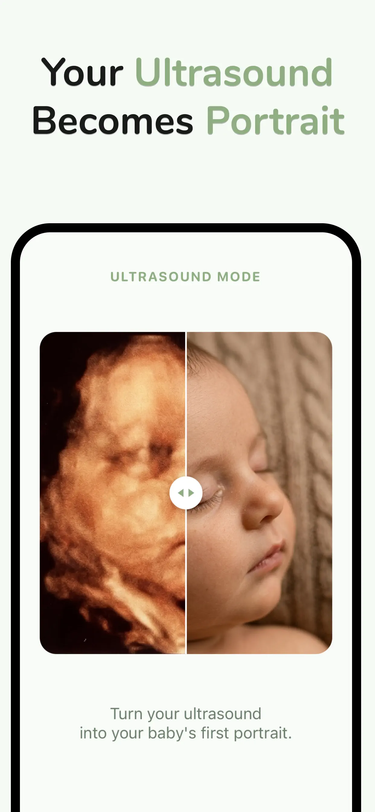

BabyBloom › Guides › 3D Ultrasound vs Reality
Does My Baby Really Look Like the 3D Ultrasound?
You've got the 3D scan on the fridge, and everyone has an opinion — "that's your husband's nose!" But a quiet question lingers: will my baby actually look like this? Here's the honest answer, and how to get a much better preview from the scan you already have.
The short answer: yes, in structure — no, in surface
Parents who compare 3D scans with newborn photos consistently report the same pattern: the core facial structure carries over, while surface details don't.
What 3D ultrasounds get right
- Nose shape — usually the most recognizable feature
- Lip curve and mouth — pouts and cupid's bows show up early
- Cheeks and jawline — the overall roundness of the face
- Relative proportions — spacing of eyes, nose and mouth
What no ultrasound can show
- Skin tone — the golden/orange color is rendering, not skin; newborn skin is also often reddish at birth
- Hair and eye color — invisible to sound waves
- Expressions — a squished frown at 30 weeks says nothing about their smile
- Head shape at birth — molding through the birth canal temporarily changes it (and resolves in days)
Why some scans look "off"
If your scan looks alien-ish or smooshed, it's usually the conditions, not your baby:
- Timing — before ~26 weeks, babies haven't built up facial fat; after ~32, they're cramped. The 26–32 week window is ideal (see the best time for a 3D ultrasound).
- Position — face pressed against the placenta or turned away distorts everything.
- Fluid and shadows — low fluid in front of the face creates waxy artifacts.
How AI turns your scan into a real preview
This is exactly the gap BabyBloom was built for. The scan holds your baby's true facial geometry; the AI supplies everything the scan can't — realistic skin, soft newborn lighting, natural detail — and renders it as a portrait-quality 2K photo.
- Upload your 3D ultrasound photo in Ultrasound Mode.
- The AI reads the structure that scans capture well — nose, lips, cheeks, proportions.
- It renders a lifelike portrait, replacing the golden blur with a face you can actually recognize.
- Swipe the before/after slider to see your scan and portrait side by side.

The bottom line
Your baby will very likely resemble their 3D ultrasound in the features that matter — and an AI portrait built from that scan is the closest preview technology can currently give. It's a preview, not a promise; but it's a beautiful one, and it makes the wait a little sweeter.
See the face behind the scan
Upload your 3D ultrasound — meet your baby in about a minute.